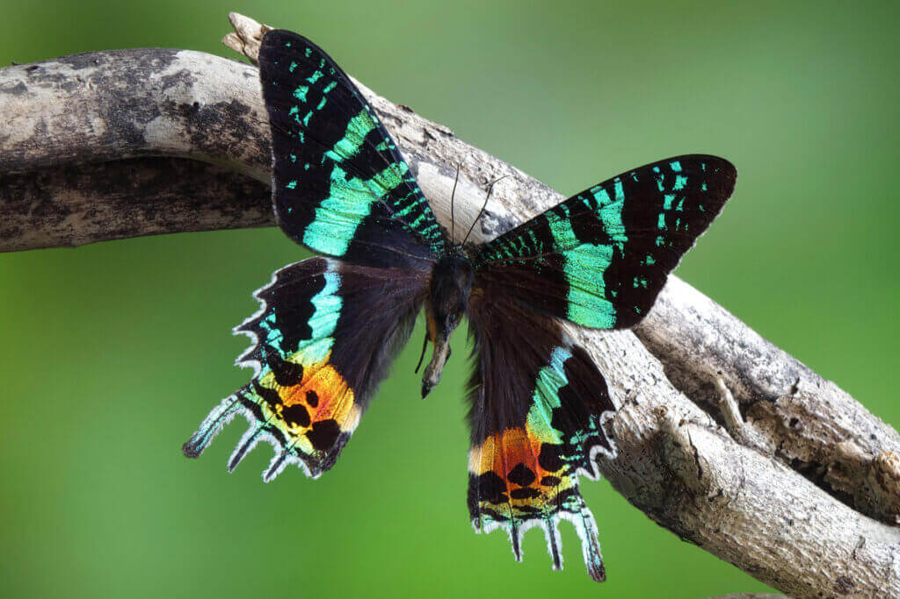

Sunset Moth
< Himalayan Vulture
Panther Chameleon >
The Sunset Moth (Chrysiridia rhipheus) is a strikingly beautiful and vibrantly colored moth native to Madagascar. Renowned for its mesmerizing iridescence, the wings of the Sunset Moth exhibit a spectrum of hues including shimmering blues, greens, purples, and oranges. The intricate patterns on its wings, combined with the radiant colors, make it one of the most visually captivating insects in the world. The Sunset Moth is notable for its diurnal (daytime) habits, in contrast to the majority of moths which are nocturnal. These moths are often found in rainforests, where they feed on nectar from various flowering plants. While the adult moths have a relatively short lifespan, their brief existence is marked by an extraordinary display of natural beauty. Due to their stunning appearance, Sunset Moths are sought after by collectors, prompting the need for conservation efforts to ensure the sustainability of their populations in the wild.
2023 Martin Prose